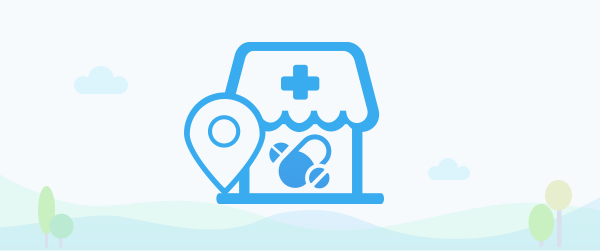

<ion-side-menus>
  <ion-side-menu-content>
    <!--<ion-header-bar class="bar-stable bar bar-header" align-title="left">-->
      <!--<button ng-click="$ionicGoBack()" class="button back-button hide buttons button-clear header-item" style=""><i-->
        <!--class="icon ion-android-arrow-back"></i>-->
        <!--<span class="back-text" style=""></span></button>-->
      <!--<div class="buttons buttons-left header-item" style=""><span class="left-buttons">-->
        <!--<button class="button button-icon button-clear ion-navicon" menu-toggle="left">-->
        <!--</button>-->
      <!--</span></div>-->
      <!--<div class="title title-left header-item" style="left: 50px;">Browse</div>-->
    <!--</ion-header-bar>-->
    <ion-nav-view>

    </ion-nav-view>

  </ion-side-menu-content>
  <ion-side-menu side="left">
    <!--左侧菜单-->
    <!--<header class="bar bar-header bar-stable">-->
      <!--<h1 class="title">Left</h1>-->
    <!--</header>-->
    <ion-content class="sidemenu-content">
      <div class="sidemenu-banner">
        
      </div>
      <ul>
        <li class="list-item no-line" menu-close ng-repeat="item in menus" ui-sref="{{item.state}}" ng-class="{'stick-highlight':currentstate.current.name==item.state}">
          <div class="item-content item-link">
            <div class="item-media">
              <i class="uicon uicon-{{item.iconName}}"></i>
            </div>
            <div class="item-inner">
              <div class="item-title">{{item.name}}</div>
            </div>
          </div>
        </li>
      </ul>
      <div class="bottom-item">
        <div class="list-item no-line" menu-close>
          <div class="item-content item-link">
            <div class="item-media">
              <i class="uicon uicon-setting"></i>
            </div>
            <div class="item-inner">
              <div class="item-title">系统设置</div>
            </div>
          </div>
        </div>
      </div>

    </ion-content>
    <ion-side-menu>
</ion-side-menus>
